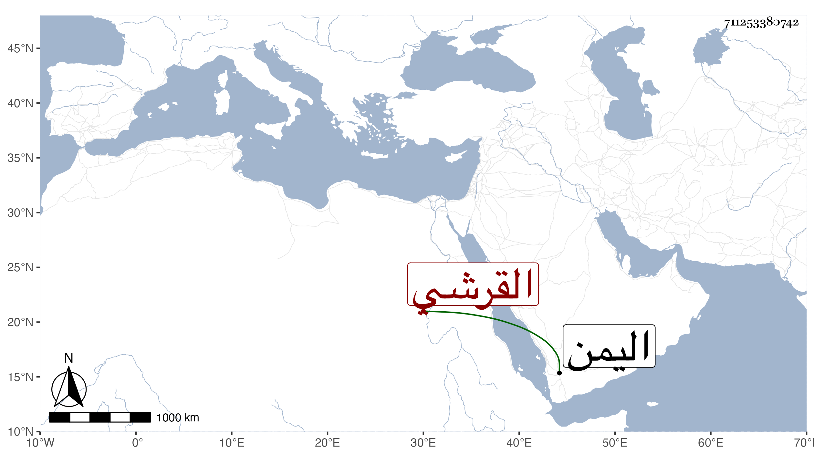

0902Sakhawi.DawLamic.ITO20230111-ara1.EIS1600.711253380742
Biography ID: 711253380742
44
أبو بكر بن أحمد الطيب بن أبي بكر بن أحمد دعسين بن علي بن عبد الله ابن محمد دعسين بن مبين بضم أوله ثم موحدة وآخره نون القرشي نسبة لقبيلة يقال لها القرشية باليمن | كان جده عالما له تصانيف منها شرح لأبي داود في أربع مجلدات مات عنه مسودة ومات سنة اثنتين وخمسين وسبعمائة وترك ابنيه محمدا وكان فقيها عارفا مات سنة سبع وثمانين وسبعمائة وأحمدا الملقب بالطيب مات سنة خمس وتسعين وسبعمائة ولثانيهما صاحب الترجمة وكان فقيها محققا متصوفا صحب علي بن عمر بن إبرهيم المخا واختص به وحمل عنه كثيرا من كتب التصوف وكتب الشاذلية وولي قضاء موزع مديدة ثم انفصل عنه ولزم التدريس والإفتاء حتى مات سنة ثلاث وأربعين . ذكرهم الأهدل بنحو هذا .
